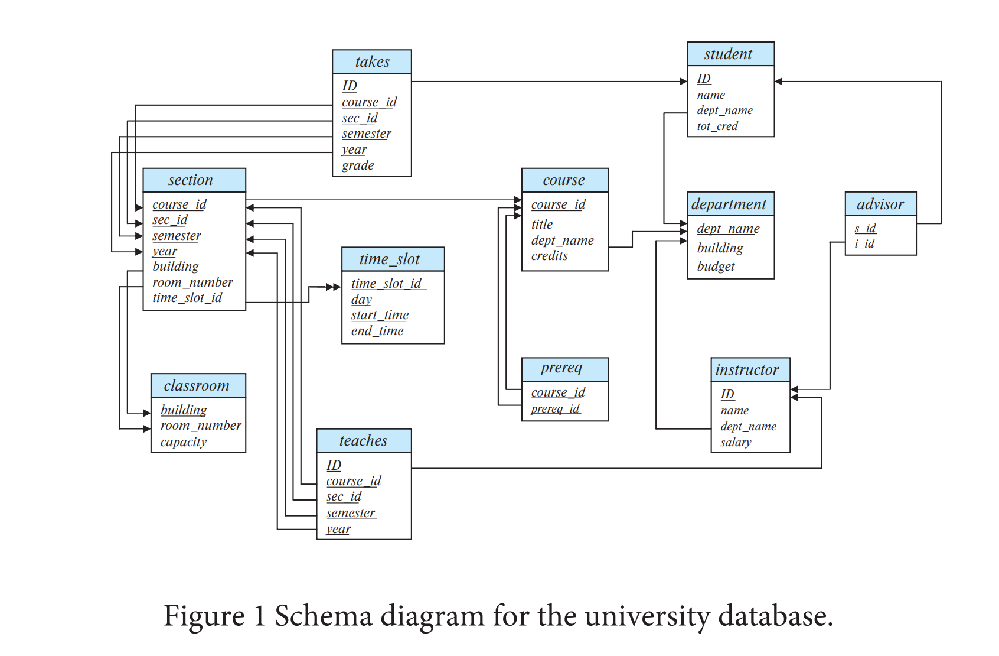

学号：23336128
姓名：梁力航

左外连接的核心思想是保留左表的所有记录，即使右表中没有匹配的记录。我们可以通过联合（UNION）两部分来实现：第一部分是内连接的结果，第二部分是左表中没有匹配的记录（用NULL填充右表的列）。
原查询：
select * from student natural left outer join takes重写后：
-- 第一部分：内连接，获取有匹配的记录
select student.ID, student.name, student.dept_name, student.tot_cred,
takes.course_id, takes.sec_id, takes.semester, takes.year, takes.grade
from student
join takes on student.ID = takes.ID
UNION
-- 第二部分：左表中没有匹配的记录，右表列用NULL填充
select student.ID, student.name, student.dept_name, student.tot_cred,
NULL as course_id, NULL as sec_id, NULL as semester, NULL as year, NULL as grade
from student
where student.ID not in (select ID from takes)全外连接需要保留两个表的所有记录。这可以看作是左外连接和右外连接的组合。我们需要三部分：内连接的结果、左表独有的记录、右表独有的记录。
原查询：
select * from student natural full outer join takes重写后：
-- 第一部分：内连接，获取两表都有匹配的记录
select student.ID, student.name, student.dept_name, student.tot_cred,
takes.course_id, takes.sec_id, takes.semester, takes.year, takes.grade
from student
join takes on student.ID = takes.ID
UNION
-- 第二部分：student表中没有匹配的记录
select student.ID, student.name, student.dept_name, student.tot_cred,
NULL as course_id, NULL as sec_id, NULL as semester, NULL as year, NULL as grade
from student
where student.ID not in (select ID from takes)
UNION
-- 第三部分：takes表中没有匹配的记录
select takes.ID, NULL as name, NULL as dept_name, NULL as tot_cred,
takes.course_id, takes.sec_id, takes.semester, takes.year, takes.grade
from takes
where takes.ID not in (select ID from student)create table manager
(employee_ID char(20),
manager_ID char(20),
primary key employee_ID,
foreign key (manager_ID) references manager(employee_ID)
on delete cascade );当删除manager表中的一条记录时，由于设置了"on delete cascade"，会触发级联删除操作。具体来说，如果删除的是某个员工的记录，那么所有以这个员工作为经理的其他员工记录也会被删除。这个过程会递归进行，形成一个删除链。
举个例子，假设员工A是员工B的经理，员工B又是员工C的经理。如果我们删除员工A的记录，那么首先会触发级联删除，删除所有manager_ID为A的记录（即员工B）。而删除员工B又会触发新的级联删除，删除所有manager_ID为B的记录（即员工C）。这样一来，删除一个高层管理者会导致整个管理层级下的所有员工记录都被删除。
create view tot_credits(year, num_credits) as
select section.year, sum(course.credits) as num_credits
from section
join takes on section.course_id = takes.course_id
and section.sec_id = takes.sec_id
and section.semester = takes.semester
and section.year = takes.year
join course on section.course_id = course.course_id
group by section.year;这个视图通过连接section、takes和course三个表来计算每年的总学分。首先，我们需要通过takes表找到学生实际选修的课程，然后从course表中获取每门课程的学分，最后按年份分组并求和。这样就能得到每年所有学生选修课程的总学分数。
原查询：
select ID
from student
except
select s_id
from advisor
where i_ID is not null;select distinct student.ID
from student
left join advisor on student.ID = advisor.s_id and advisor.i_ID is not null
where advisor.s_id is null;原查询的目的是找出所有没有导师的学生。我们可以用左外连接来实现：将student表与advisor表进行左外连接，连接条件是学生ID匹配且导师ID不为空。对于那些没有导师的学生，左外连接会在advisor的列中填充NULL。因此，我们只需要筛选出advisor.s_id为NULL的记录，就能得到所有没有导师的学生。
原查询：
select *
from section natural join classroom;select *
from section
join classroom using (building, room_number);通过观察Figure 1中的数据库模式，我们可以看到section表和classroom表有两个共同的属性：building和room_number。natural join会自动在这两个属性上进行连接。使用USING子句可以明确指定连接的列，这样做的好处是更加清晰明了，避免了natural join可能带来的歧义。而且，USING子句在结果中只会保留一份连接列，这与natural join的行为是一致的。
这个场景不会在授权图中产生真正意义上的循环。用户A作为关系r的所有者，本身就拥有所有权限，包括select权限。当A将select权限授予public（附带授权选项）时，所有用户（包括用户B）都获得了这个权限，并且可以将这个权限传播给其他用户。
接下来，用户B将select权限授予A。从表面上看，这似乎形成了一个循环：A授权给public（包括B），B又授权给A。但实际上，A作为关系r的所有者，其权限是固有的，不依赖于任何其他用户的授权。B授予A的权限是冗余的，因为A本来就拥有这个权限。
在授权图中，我们会看到从A到public的一条边，以及从B（作为public的成员）到A的一条边。但这不构成真正的循环依赖，因为A的权限来源是其作为所有者的身份，而不是B的授权。如果我们撤销B对A的授权，A仍然保有其作为所有者的所有权限。